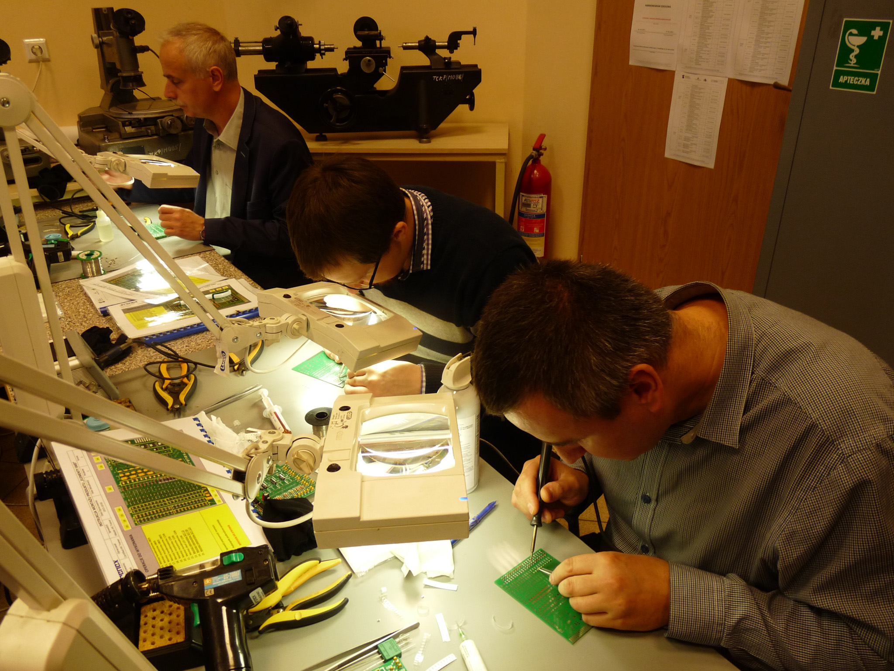
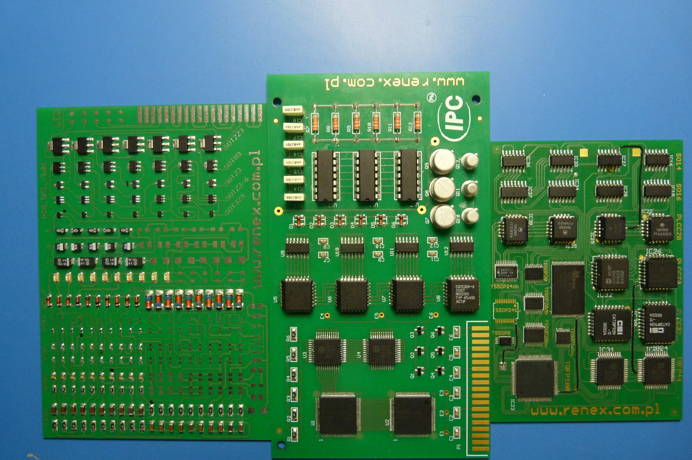
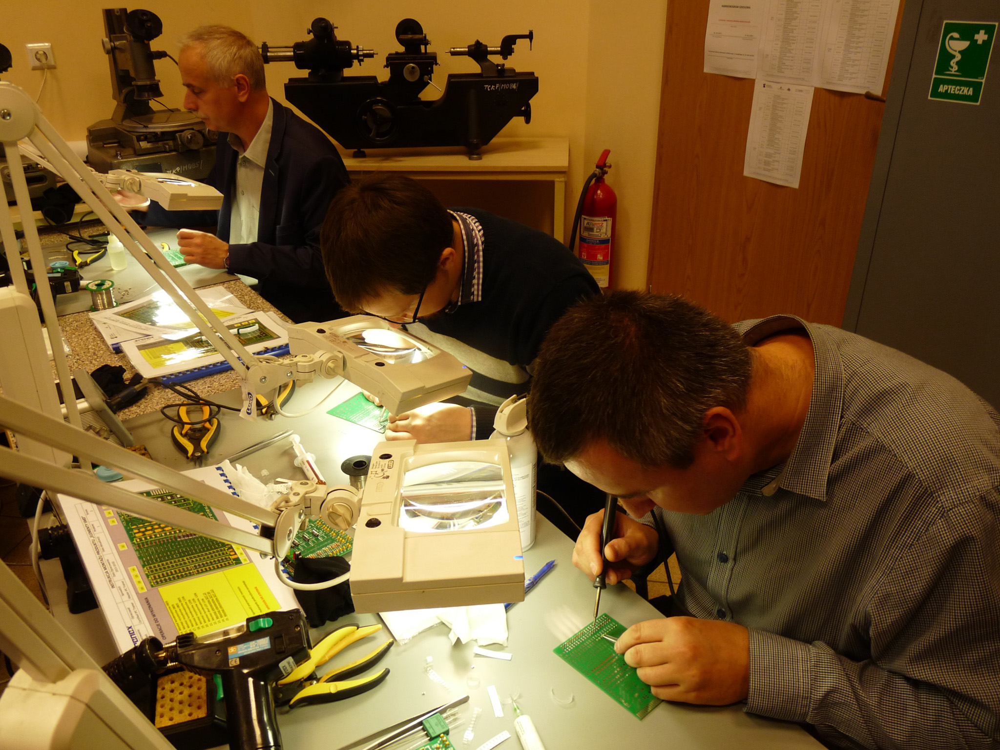
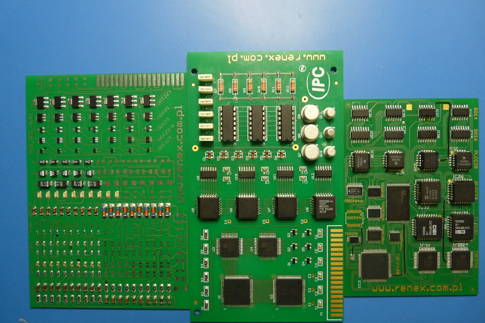

Tarnowskie Centrum Kształcenia Praktycznego i Ustawicznego w ramach projektu pn. "Kwalifikacje zawodowe sukcesem na rynku pracy" współfinansowanego ze środków Unii Europejskiej w ramach Regionalnego Programu Operacyjnego zorganizowało kurs "Lutowanie i naprawa pakietów elektronicznych" dla 20 uczniów z Zespołu Szkół Mechaniczno - Elektrycznych oraz Zespołu Szkół Technicznych. Kurs prowadziła firma Renex z Włocławka. Kurs trwał 32 godziny i kończył egzaminem, po zdaniu którego uczniowie uzyskali kwalifikacje zawodowe.
W ramach takiego samego kursu w wersji rozszerzonej w wymiarze 100 godzin 3 nauczycieli TCKPiU poszerzyło swoją wiedzę i zapoznało się z nowymi technologiami w zakresie urządzeń elektronicznych.